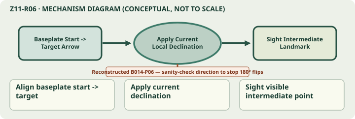

Z11-R06 · Navigation, weather and rescue · Reconstruction draft
Measure and walk a verified practice bearing between landmarks
Practice plotting a map bearing, applying declination and sighting a visible target safely on known dry land.
Lineage · B014 reconstruction · r01 slot R06 (original B014-P06 missing)
When it applies · Supervised dry-land training and routine trail-to-landmark checks; reconstructs missing B014-P06.
Equipment · Current topographic map, baseplate compass with declination convention verified and known practice area.

Actions
- Place the baseplate edge from your verified start point to your target landmark (direction-of-travel arrow pointing forward), turn the bezel so orienting lines align with map north and read the map bearing.[T08, N08, ED]
- Apply your current local declination conversion cleanly (or use an adjustable-declination compass verified for your zone) so the magnetic bearing matches the field compass needle.[T08, N08]
- Hold the compass level clear of metal, rotate your whole body until the needle settles inside the orienting arrow and sight an intermediate landmark straight ahead along the travel arrow.[N08, ED]
Failure recognition · Pointing the baseplate arrow backward toward the start point (walking 180 degrees opposite) or forgetting to apply local declination.[T08, N08]
Verify · Check the bearing direction roughly on the oriented map (e.g., northeast vs southwest) before stepping off to catch 180-degree errors immediately.[T08, N08, ED]
Stop or change course · Practice bearings first on bounded known dry land; halt immediately if the compass reading disagrees with obvious terrain orientation.[N08, T06, ED]
Evidence and editorial notes
- N08 · NOAA NCEI · Magnetic Declination (current web edition)
- Section: Magnetic Declination > Local Anomalies and Compass Interference · Conditions: Using magnetic baseplate compasses near metal, electronics or iron-rich rock
Support: True north, grid north and magnetic north differ by local declination; additionally, nearby phones, vehicles, knives, steel poles and localized magnetic rock (e.g., northern Minnesota iron formations) deflect compass needles erratically.
Limitations: Never assume a compass needle reads true magnetic field while held near gear, vehicles or iron ore. · Conflicting evidence: Aligns with B014-P13 and B014-P14.
Editorial note: Grounds declination conversion, metal-clearance and magnetic-anomaly cards. · Specialist reviewer: Navigation and geophysics safety
Primary source · checked 2026-11-24 - T06 · NPS · Outdoor Emergency Plan (current web edition)
- Section: If you get lost or hurt; call for help · Conditions: Outdoor US emergency
Support: Communicate location, last known point, situation and needs. Stay put when unable to establish a safe route unless immediate danger requires movement.
Limitations: Cell signal is unreliable in backcountry terrain; pre-trip plans bridge communication gaps. · Conflicting evidence: None; core lost-person decision rule.
Editorial note: Foundation for stay/signal/move and dispatch handoff cards. · Specialist reviewer: Search and rescue
Primary source · checked 2026-11-24 - T08 · NOAA NCEI · Magnetic Declination (current web edition)
- Section: Definition and bearing conversion · Conditions: Trip planning with a map and compass
Support: Declination varies by date and geographic position. Determine the map reference and current local value.
Limitations: Outdated map margins can have meaningful declination drift over decades. · Conflicting evidence: None; retained for navigation reconstructions.
Editorial note: Preserved for Z11 continuity. · Specialist reviewer: Navigation and search and rescue
Primary source · checked 2026-11-24
Source lineage · B014 reconstruction · r01 slot R06 (original B014-P06 missing) · Classification · Reconstruction draft.